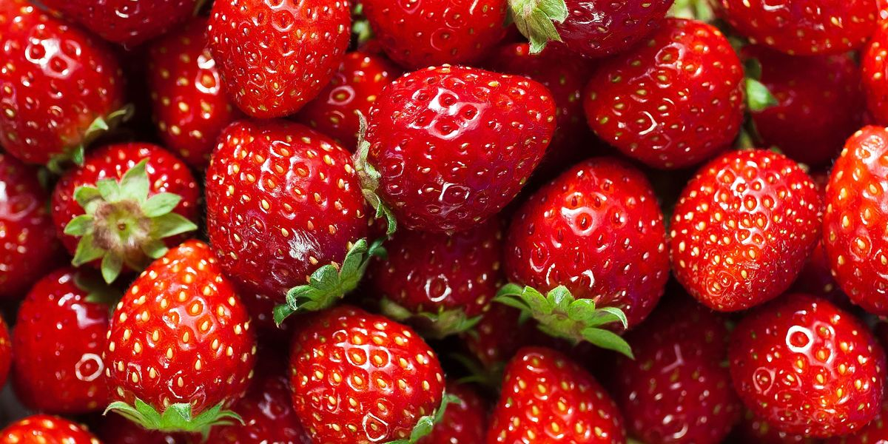
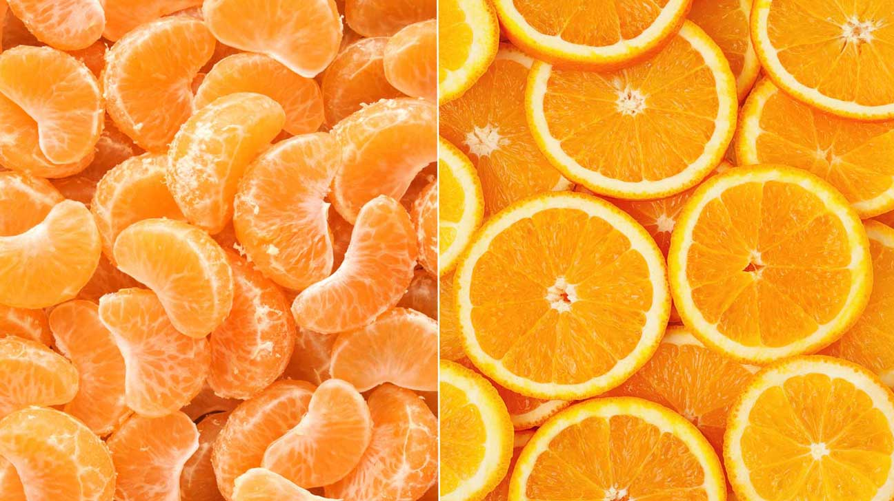
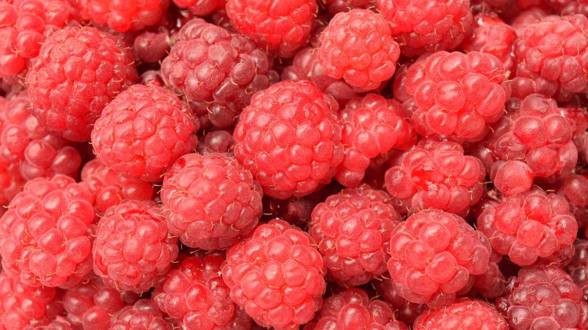

The Strawberry is one of my favourite fruits mainly because it is a very good tasting strawberry that are great to eat during a hot summer day. This red fruit also has many other benifits other than tasting good, such as They naturally deliver vitamins, fiber, and particularly high levels of antioxidants known as polyphenols - without any sodium, fat, or cholesterol which is really good for our bodies.
The Orange is another one of my favourite fruits mainly because how refreshing it taste like. It might be a pain to peal it but when your done its definetley worth it. Some other benifits of eating this orange fruit are that it helps normalize bowel movements, lowers cholesterol levels, controls blood sugar, maintains bowel health, and aids in achieving a healthy weight. Most importantly the oranges have a signicant amount of vitamin C so eating this will help with your vitamin intake.
The Raspberry is another one of my favoruite fruit not only because of its refreshing taste but of the amazing snack it becomes when it is frozen. When you freeze it becomes cold and is great to have during a hot day. Some other benifits of this red fruit are that they provide potassium, essential to heart function, and proven to lower blood pressure.
